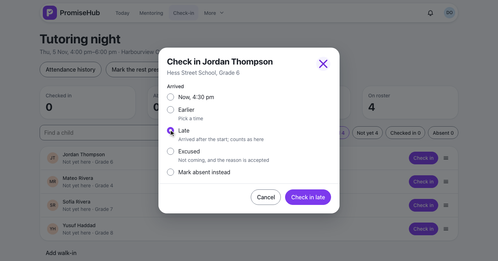
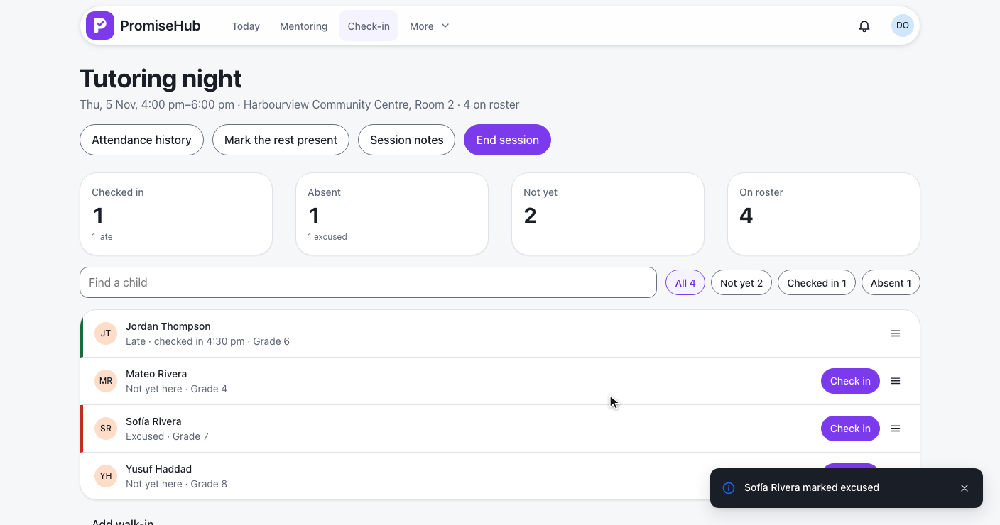
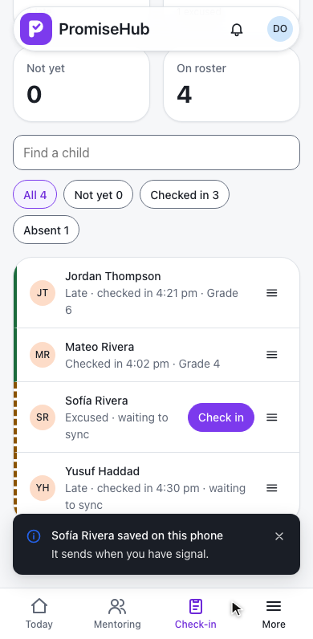
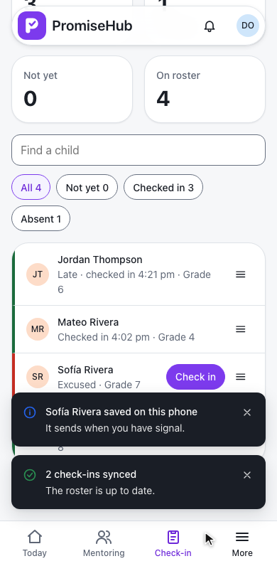
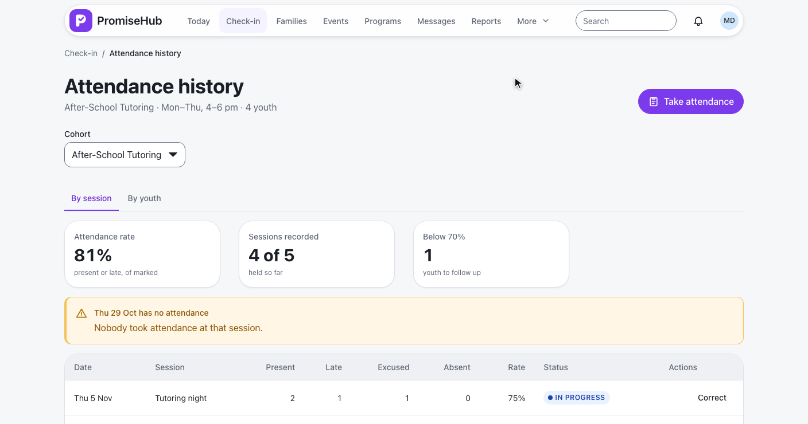
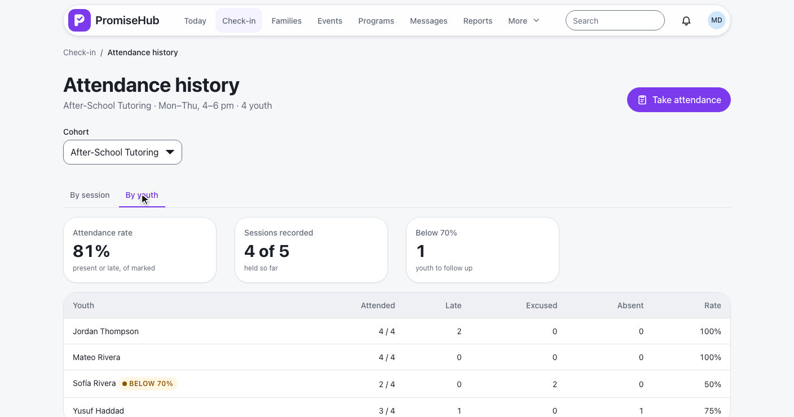
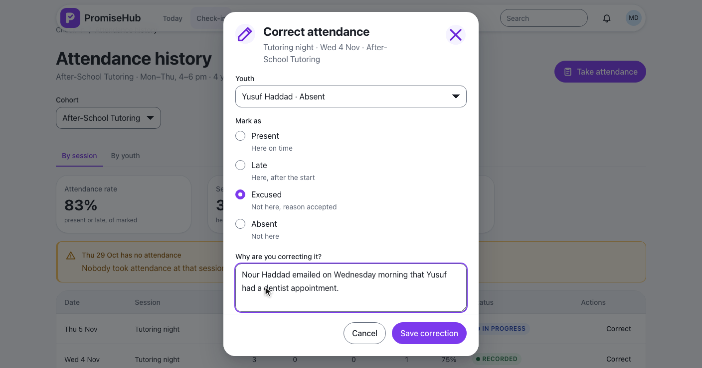
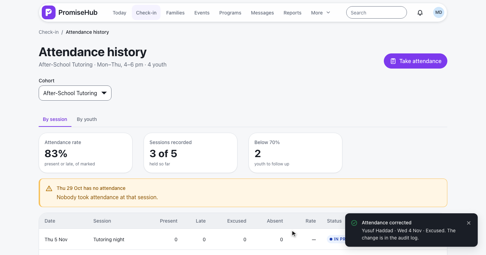
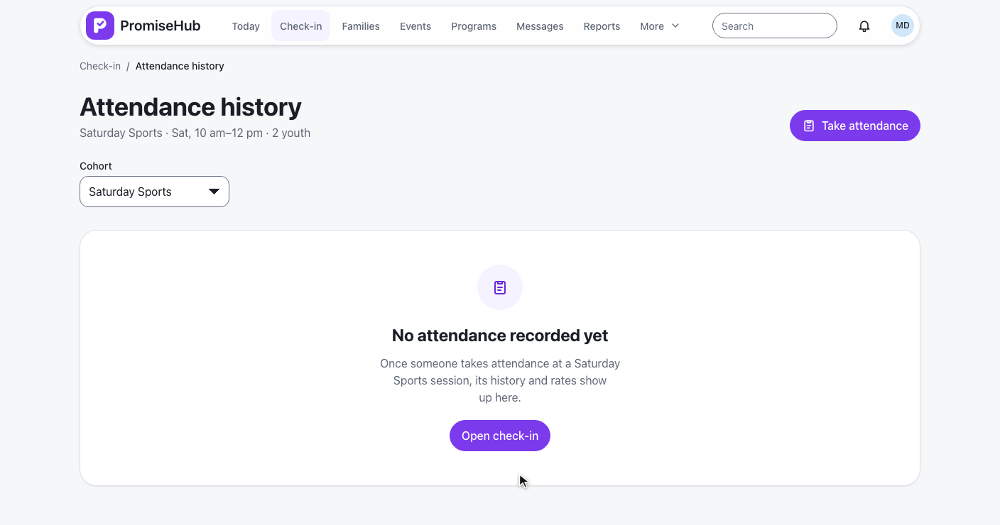
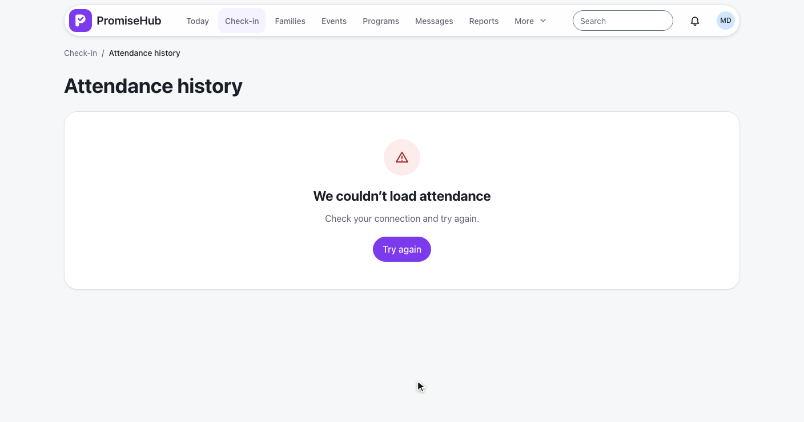

PromiseHub · Video 71
Take attendance for cohort sessions
Present, late, excused or absent in Roll Call, online or offline, with history, rates and audited corrections
Present, late, excused or absent in Roll Call, online or offline, with history, rates and audited corrections
Late, excused, then Mark the rest present.


| Mark | In Roll Call |
|---|---|
| Present | Checked in (or signed out) |
| Late | Checked in, late flag kept through sign-out |
| Excused | Absent, excused flag; no no-show text |
| Absent | Absent |
| Mentors | Run their team’s cohorts’ sessions; no medical, Quick Cards or sign-out |
POST /sessions/{id}/check-ins {late} · /absences {excused} · L2-095 · ADR 0065
Marks wait on the phone and sync in order.


Once per client action id · refused marks leave the queue · L2-096, L2-098, L2-099
By session, then by youth.


GET /attendance?programId= · L2-097
| Who | History | Correct |
|---|---|---|
| Admin, program director | Every active cohort | Yes |
| Site lead | Every active cohort | No (403) |
| Mentor | His team’s cohorts; another is 403, audited | No (403) |
| Youth worker, coordinator, youth | 403 | 403 |
| Another organization | 404 | 404 |
Absent to Excused, with why.


PUT /sessions/{id}/attendance/{childId} · before, after and reason in the audit log
Jaylen’s roster and the history.
Invalid, failed, empty, error, forbidden, Roll Call off.


LateAndExcusedTests and MentorRollCallTests: flags, counts, sign-out, replay, mentor scope, tenancy, Roll Call offAttendanceHistoryTests and CorrectAttendanceTests: statuses, rates, youth, roles, every check, auditlate-and-excused, mentor-attendance, offline-attendance and attendance-history specs on phone and laptop, with axe
Next: the volunteer portal